Cross-cell-type co-progression with orthogonal axes (Colon Day 3)
2026-04-15
Source:vignettes/colon_d3_cross_type.Rmd
colon_d3_cross_type.RmdOverview
This vignette demonstrates how CoPro detects cross-cell-type co-progression using colon organoid Day 3 data. CoPro identifies multiple orthogonal canonical components (CCs), each capturing an independent axis of coordinated spatial variation between cell types.
In this dataset, we analyze three cell types—Epithelial, Fibroblast, and Immune—and show that CC1 and CC2 capture distinct, biologically meaningful spatial programs. We also compare CoPro axes with independently derived mucosal neighborhood (MU) labels to validate that the unsupervised axes recover known tissue structure.
Download and load data
data_path <- copro_download_data("colon_d3")## Downloading copro_colon_d3.rds from GitHub Release 'data-v1'...## Downloaded to: /home/runner/.cache/R/CoPro/copro_colon_d3.rds## List of 3
## $ normalizedData: num [1:11666, 1:891] 0 0 0 0 0 0 0 0 0 0 ...
## ..- attr(*, "dimnames")=List of 2
## $ locationData :'data.frame': 11666 obs. of 2 variables:
## $ cellTypes : chr [1:11666] "Epithelial" "Fibroblast" "Epithelial" "Epithelial" ...Visualize the tissue
plot_df <- data.frame(
x = dat$locationData$x,
y = dat$locationData$y,
celltype = dat$cellTypes
)
ggplot(plot_df, aes(x = x, y = y, color = celltype)) +
geom_point(size = 0.5, alpha = 0.6) +
scale_color_manual(values = c("Epithelial" = "#E41A1C",
"Fibroblast" = "#377EB8",
"Immune" = "#4DAF4A")) +
coord_fixed() +
ggtitle("Colon Day 3 organoid") +
theme_classic() +
theme(legend.position = "bottom")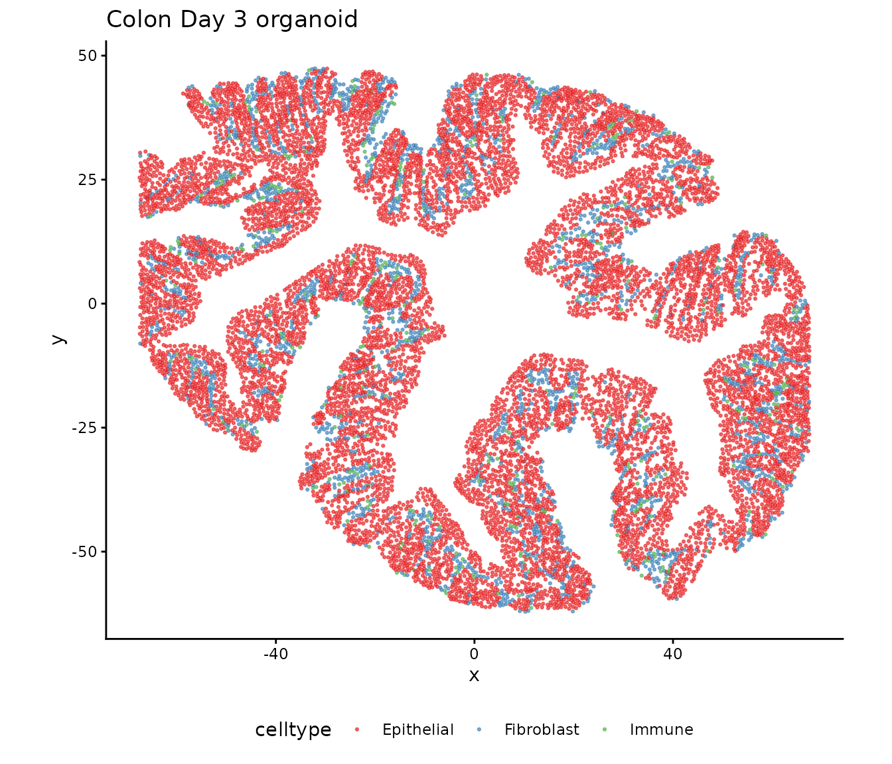
Mucosal neighborhood (MU) labels
The tissue has been independently annotated with mucosal neighborhood labels (MU1–MU4) via Leiden clustering on spatial neighborhoods. MU4 represents an inflammation-associated microenvironment distinct from MU1–3 (crypt-associated neighborhoods):
mu_df <- data.frame(
x = dat$locationData$x,
y = dat$locationData$y,
MU = dat$metaData$Leiden_neigh
)
# Group MU1-3 together as in the manuscript
mu_df$MU_grouped <- ifelse(mu_df$MU %in% c("MU1", "MU2", "MU3"),
"MU1-3", as.character(mu_df$MU))
mu_df$MU_grouped <- factor(mu_df$MU_grouped, levels = c("MU1-3", "MU4"))
mu_colors <- c("MU1-3" = "#5c9137", "MU4" = "#614b83")
ggplot(mu_df, aes(x = x, y = y, color = MU_grouped)) +
geom_point(size = 0.5, alpha = 0.6) +
scale_color_manual(values = mu_colors) +
coord_fixed() +
ggtitle("Mucosal neighborhood (MU) labels") +
theme_classic() +
theme(legend.position = "bottom",
legend.title = element_blank())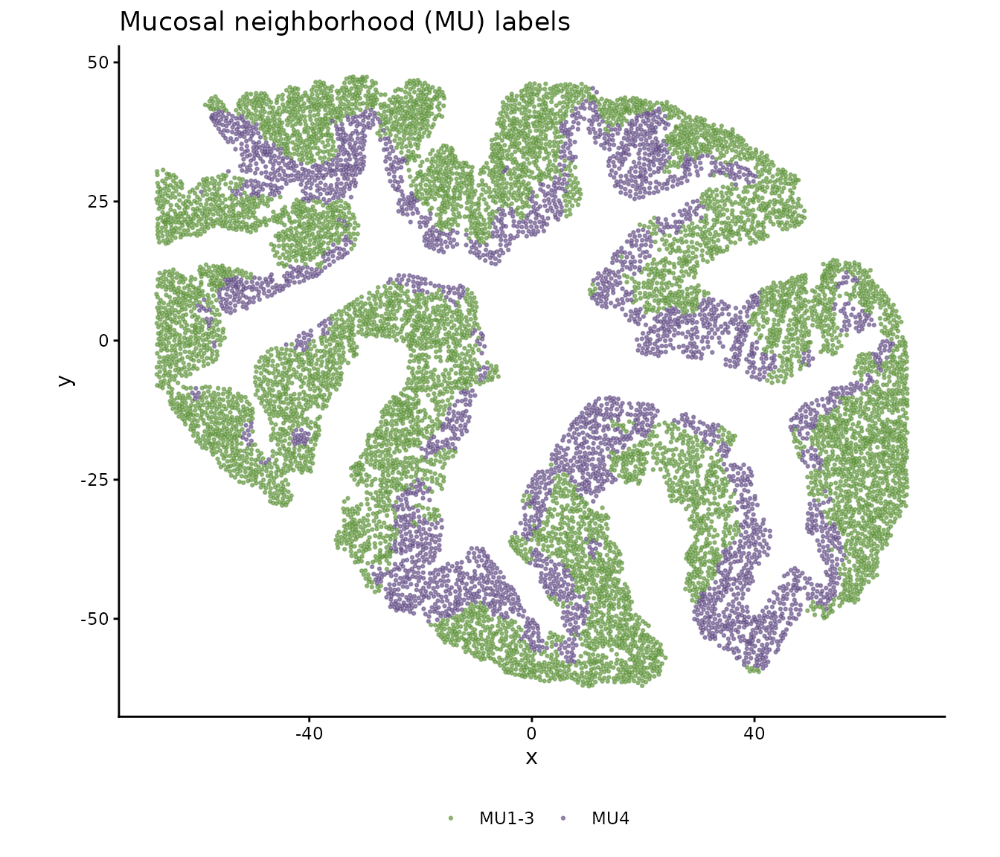
Create CoPro object
obj <- newCoProSingle(
normalizedData = dat$normalizedData,
locationData = dat$locationData,
metaData = dat$metaData,
cellTypes = dat$cellTypes
)
cell_types <- c("Epithelial", "Fibroblast", "Immune")
obj <- subsetData(obj, cellTypesOfInterest = cell_types)Run the CoPro pipeline
# PCA
obj <- computePCA(obj, nPCA = 40, center = TRUE, scale. = TRUE)## Input is dense (matrixarray), performing irlba pca...
## Input is dense (matrixarray), performing irlba pca...
## Input is dense (matrixarray), performing irlba pca...
# Distance and kernel
obj <- computeDistance(obj, distType = "Euclidean2D")## normalizeDistance is set to TRUE, so distance will be normalized, so that 0.01 percentile distance will be scaled to 0.01
## 0% 25% 50% 75% 100%
## 0.9705014 37.5605433 59.8000973 82.3149151 148.3187211
## 0% 25% 50% 75% 100%
## 1.044265 37.159523 59.872983 82.261799 147.622508
## 0% 25% 50% 75% 100%
## 1.036319 37.135140 59.598056 82.079873 147.257437
## The scaling factor for normalizing distance is 0.01030395
sigma_choice <- c(0.005, 0.01, 0.02, 0.05, 0.1)
obj <- computeKernelMatrix(obj, sigmaValues = sigma_choice)## Computing pairwise kernel matrix for 3 cell types
## current sigma value is 0.005
## current sigma value is 0.01
## current sigma value is 0.02
## current sigma value is 0.05
## current sigma value is 0.1
# Sparse kernel CCA -- request 4 CCs to capture multiple axes
obj <- runSkrCCA(obj, scalePCs = TRUE, maxIter = 500, nCC = 4)## Running skrCCA for sigma = 0.005## [1] "Convergence reached at 9 iterations (Max diff = 6.837e-06 )"
## [1] "Convergence reached at 9 iterations (Max diff = 4.406e-06 )"
## [1] "Convergence reached at 35 iterations (Max diff = 8.970e-06 )"
## [1] "Convergence reached at 51 iterations (Max diff = 9.957e-06 )"## Running skrCCA for sigma = 0.01## [1] "Convergence reached at 11 iterations (Max diff = 3.749e-06 )"
## [1] "Convergence reached at 6 iterations (Max diff = 3.491e-06 )"
## [1] "Convergence reached at 22 iterations (Max diff = 8.516e-06 )"
## [1] "Convergence reached at 18 iterations (Max diff = 9.325e-06 )"## Running skrCCA for sigma = 0.02## [1] "Convergence reached at 11 iterations (Max diff = 3.220e-06 )"
## [1] "Convergence reached at 6 iterations (Max diff = 4.958e-06 )"
## [1] "Convergence reached at 17 iterations (Max diff = 7.344e-06 )"
## [1] "Convergence reached at 7 iterations (Max diff = 9.868e-06 )"## Running skrCCA for sigma = 0.05## [1] "Convergence reached at 17 iterations (Max diff = 5.965e-06 )"
## [1] "Convergence reached at 8 iterations (Max diff = 8.780e-06 )"
## [1] "Convergence reached at 6 iterations (Max diff = 6.403e-06 )"
## [1] "Convergence reached at 22 iterations (Max diff = 8.899e-06 )"## Running skrCCA for sigma = 0.1## [1] "Convergence reached at 24 iterations (Max diff = 7.534e-06 )"
## [1] "Convergence reached at 12 iterations (Max diff = 7.206e-06 )"
## [1] "Convergence reached at 7 iterations (Max diff = 4.527e-06 )"
## [1] "Convergence reached at 86 iterations (Max diff = 9.381e-06 )"## Optimization succeeded for 5 sigma value(s): sigma_0.005, sigma_0.01, sigma_0.02, sigma_0.05, sigma_0.1
# Normalized correlation and scores
obj <- computeNormalizedCorrelation(obj)## Calculating spectral norms, depending on the data size, this may take a while.
## Finished calculating spectral norms
obj <- computeGeneAndCellScores(obj)Select optimal sigma
ncorr <- getNormCorr(obj)
ggplot(ncorr, aes(x = sigmaValues, y = normalizedCorrelation)) +
geom_point() +
geom_line() +
facet_wrap(~ ct12 + CC_index, scales = "free_y") +
xlab("Sigma") +
ylab("Normalized Correlation") +
ggtitle("Normalized correlation across sigma values") +
theme_minimal()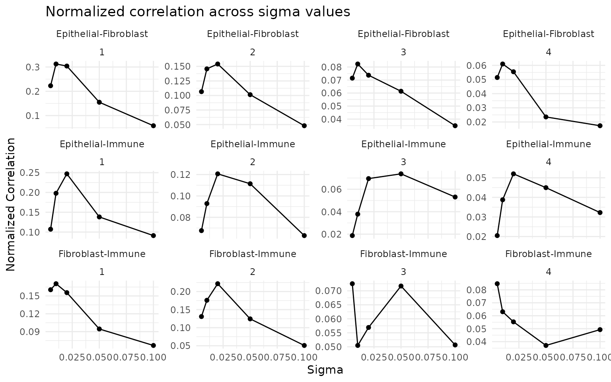
Orthogonal axes: CC1 vs CC2
A key feature of CoPro is that it extracts multiple orthogonal axes. Each CC captures a distinct pattern of spatial co-variation:
CC1 cell scores in situ
sigma_opt <- 0.01 # adjust based on ncorr plot
cs_cc1 <- getCellScoresInSitu(obj, sigmaValueChoice = sigma_opt,
ccIndex = 1)
ggplot(cs_cc1) +
geom_point(aes(x = x, y = y, color = cellScores), size = 0.8) +
scale_color_viridis_c() +
facet_wrap(~ cellTypesSub) +
coord_fixed() +
ggtitle("CC1 cell scores in situ (by cell type)") +
theme_minimal()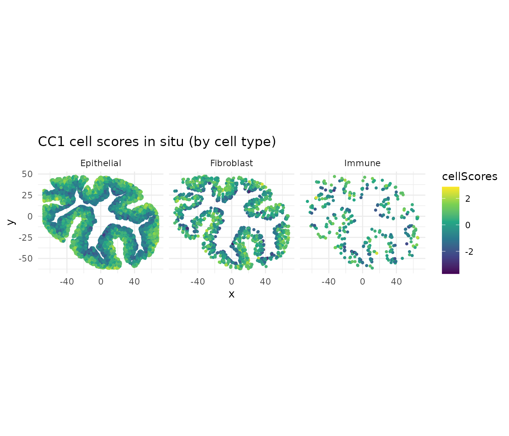
CC2 cell scores in situ
cs_cc2 <- getCellScoresInSitu(obj, sigmaValueChoice = sigma_opt,
ccIndex = 2)
ggplot(cs_cc2) +
geom_point(aes(x = x, y = y, color = cellScores), size = 0.8) +
scale_color_viridis_c(option = "C") +
facet_wrap(~ cellTypesSub) +
coord_fixed() +
ggtitle("CC2 cell scores in situ (by cell type)") +
theme_minimal()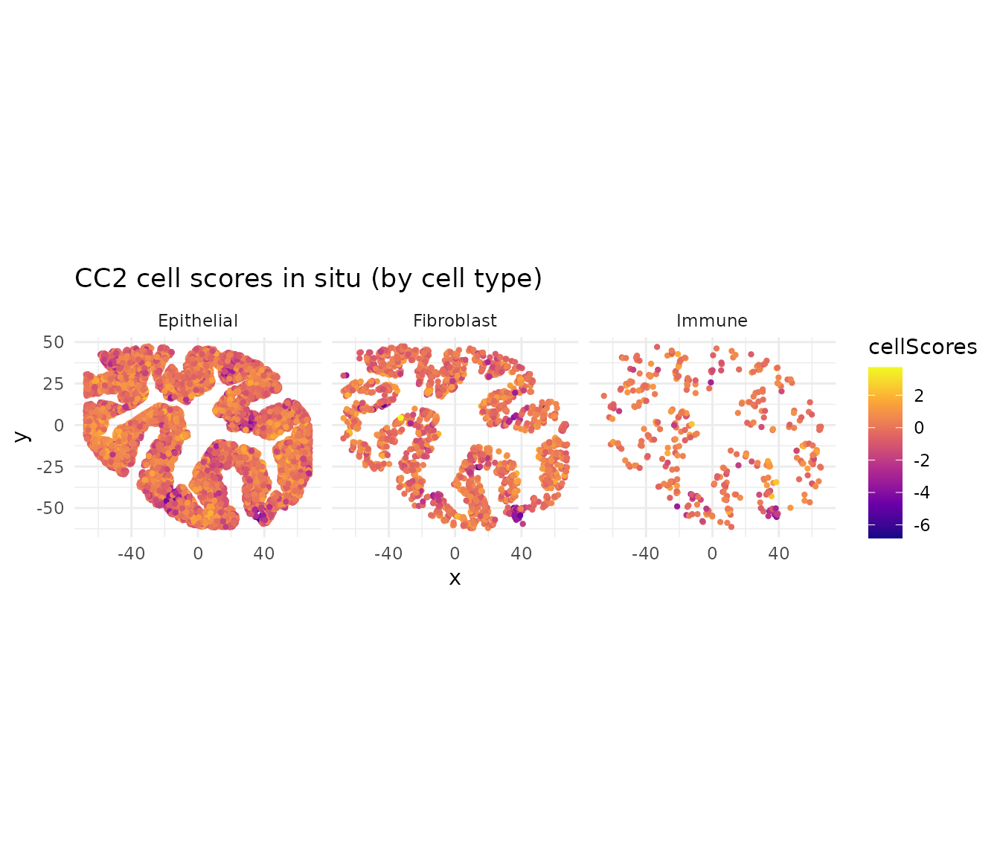
CC1 and CC2 capture distinct spatial gradients. Because CCA axes are orthogonal, these represent independent programs of coordinated gene expression across cell types.
CoPro axes recover mucosal neighborhood structure
A key validation is that CoPro’s unsupervised axes align with the independently derived MU labels. We plot CC1 vs CC2 cell scores colored by MU label, showing that MU4 (inflammation) occupies a distinct region of the CoPro score space:
lmeta <- obj@metaDataSub
lmeta$cc1 <- lmeta[, paste0("cellScore_sigma_", sigma_opt, "_cc_index_1")]
lmeta$cc2 <- lmeta[, paste0("cellScore_sigma_", sigma_opt, "_cc_index_2")]
lmeta$MU_grouped <- ifelse(lmeta$Leiden_neigh == "MU4", "MU4", "MU1-3")
ggplot() +
geom_point(data = lmeta, aes(x = cc1, y = cc2, color = MU_grouped),
size = 0.1, alpha = 0.1) +
geom_density_2d(data = lmeta[lmeta$MU_grouped == "MU1-3", ],
aes(x = cc1, y = cc2), color = "#5c9137",
linewidth = 0.5, alpha = 0.9) +
geom_density_2d(data = lmeta[lmeta$MU_grouped == "MU4", ],
aes(x = cc1, y = cc2), color = "#614b83",
linewidth = 0.5, alpha = 0.9) +
scale_color_manual(values = c("MU1-3" = "#5c9137", "MU4" = "#614b83")) +
xlab("CoPro CC1") +
ylab("CoPro CC2") +
labs(color = "MU Label") +
ggtitle("CoPro CC1 vs CC2 colored by MU label") +
theme_classic()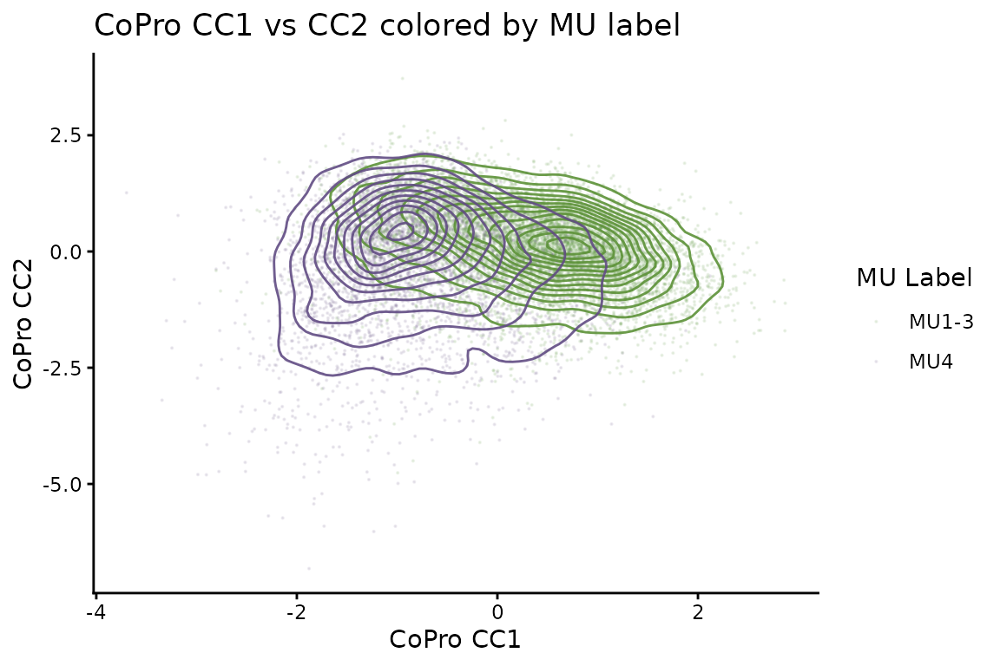
Example gene expression in situ
Top CoPro genes show spatially coherent expression patterns. Here we visualize two marker genes: Egr1 (immediate early gene, enriched in the inflammation/CC2 axis) and Mki67 (proliferation marker, enriched in crypt base/CC1 axis):
expr_df <- data.frame(
x = dat$locationData$x,
y = dat$locationData$y,
Egr1 = dat$normalizedData[, "Egr1"],
Mki67 = dat$normalizedData[, "Mki67"]
)
# Egr1 (inflammation marker)
expr_df <- expr_df[order(expr_df$Egr1), ]
ggplot(expr_df, aes(x = x, y = y, color = Egr1)) +
geom_point(size = 0.2) +
scale_color_gradientn(colors = c("gray90", "darkred")) +
coord_fixed() +
ggtitle("Egr1 (inflammation marker)") +
theme_classic() +
theme(axis.line = element_blank(), axis.text = element_blank(),
axis.ticks = element_blank(), axis.title = element_blank())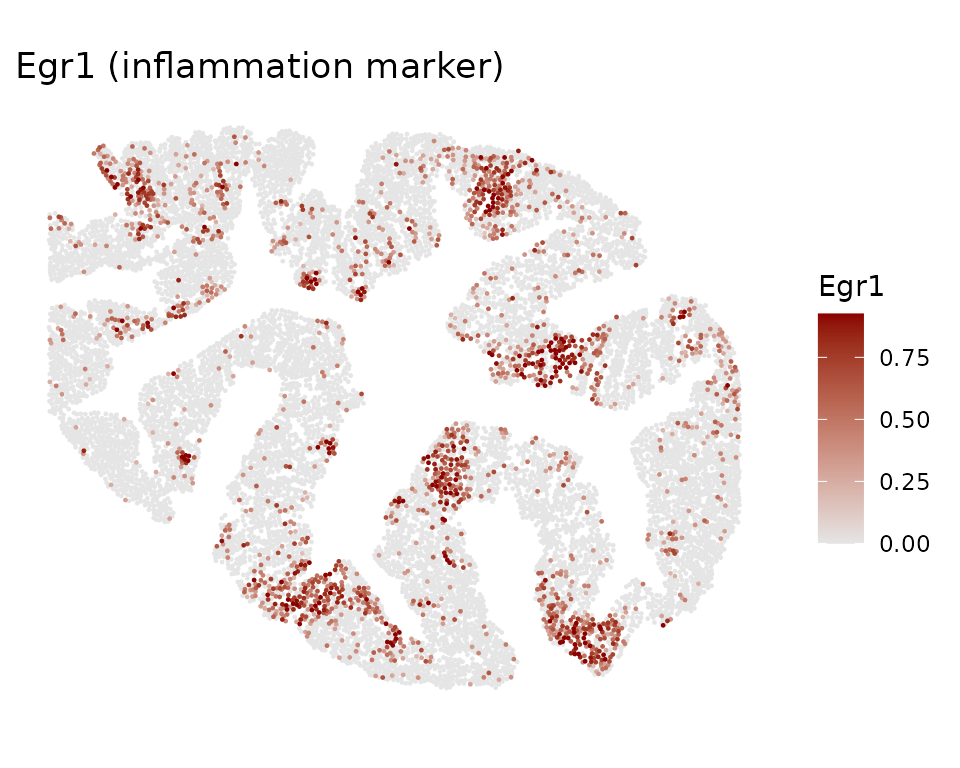
# Mki67 (proliferation marker)
expr_df <- expr_df[order(expr_df$Mki67), ]
ggplot(expr_df, aes(x = x, y = y, color = Mki67)) +
geom_point(size = 0.2) +
scale_color_gradientn(colors = c("gray90", "darkblue")) +
coord_fixed() +
ggtitle("Mki67 (proliferation marker)") +
theme_classic() +
theme(axis.line = element_blank(), axis.text = element_blank(),
axis.ticks = element_blank(), axis.title = element_blank())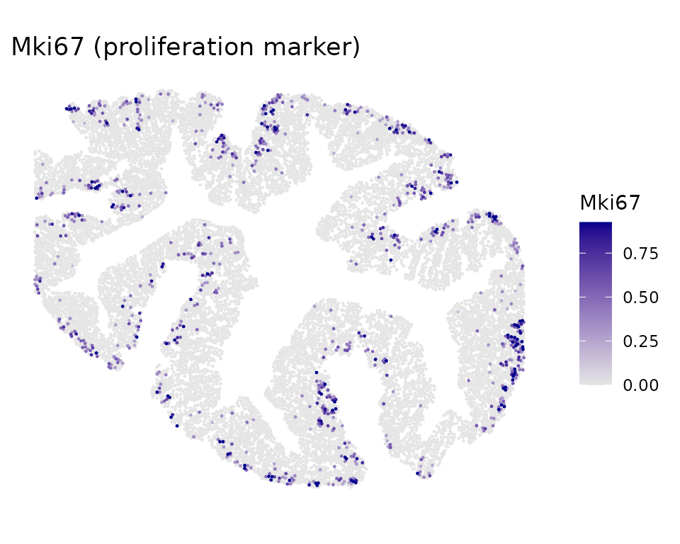
Cross-type correlation plots
The correlation between cell types shows how strongly their spatial programs are coupled:
# CC1: Epithelial vs Fibroblast
df_cc1 <- getCorrTwoTypes(obj,
sigmaValueChoice = sigma_opt,
cellTypeA = "Epithelial",
cellTypeB = "Fibroblast",
ccIndex = 1
)
ggplot(df_cc1) +
geom_point(aes(x = AK, y = B), size = 0.5, alpha = 0.4) +
xlab("Epithelial CC1 (spatially smoothed)") +
ylab("Fibroblast CC1") +
ggtitle("CC1: Epithelial-Fibroblast co-progression") +
theme_minimal()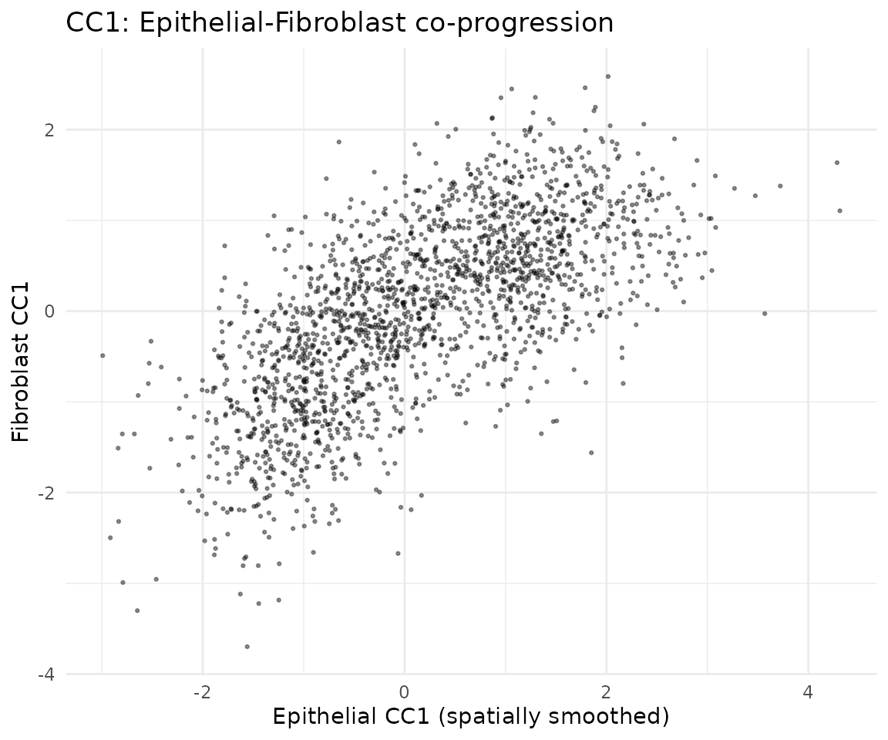
# CC2: Epithelial vs Fibroblast
df_cc2 <- getCorrTwoTypes(obj,
sigmaValueChoice = sigma_opt,
cellTypeA = "Epithelial",
cellTypeB = "Fibroblast",
ccIndex = 2
)
ggplot(df_cc2) +
geom_point(aes(x = AK, y = B), size = 0.5, alpha = 0.4) +
xlab("Epithelial CC2 (spatially smoothed)") +
ylab("Fibroblast CC2") +
ggtitle("CC2: Epithelial-Fibroblast co-progression") +
theme_minimal()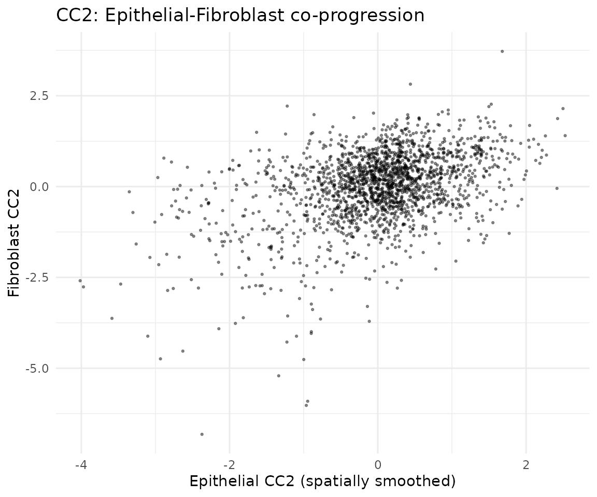
Gene scores
Identify which genes drive each co-progression axis:
# Compute regression-based gene scores (recommended)
obj <- computeRegressionGeneScores(obj, sigma = sigma_opt)## Computed regression gene scores for sigma=0.01, cellType='Epithelial'## Computed regression gene scores for sigma=0.01, cellType='Fibroblast'## Computed regression gene scores for sigma=0.01, cellType='Immune'Visualize top genes for CC1
# Extract regression gene scores for Epithelial CC1
key <- paste0("geneScores|sigma", sigma_opt, "|Epithelial")
gs_epi <- obj@geneScoresRegression[[key]]
# Top 20 genes by absolute weight for CC1
gs_cc1 <- gs_epi[, 1]
top_genes <- head(sort(abs(gs_cc1), decreasing = TRUE), 20)
top_df <- data.frame(
gene = factor(names(top_genes), levels = rev(names(top_genes))),
weight = gs_cc1[names(top_genes)]
)
top_df$direction <- ifelse(top_df$weight > 0, "positive", "negative")
ggplot(top_df, aes(x = gene, y = weight, fill = direction)) +
geom_col() +
coord_flip() +
scale_fill_manual(values = c("positive" = "darkred",
"negative" = "lightpink")) +
ggtitle("Top 20 Epithelial genes (CC1, regression)") +
theme_classic() +
theme(legend.position = "none")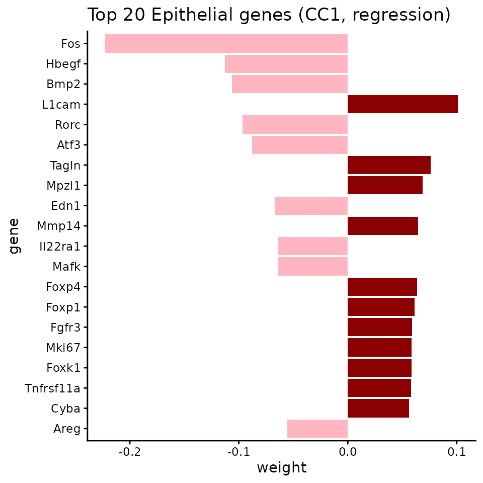
Visualize top genes for CC2
# Top 20 genes by absolute weight for CC2
gs_cc2 <- gs_epi[, 2]
top_genes_cc2 <- head(sort(abs(gs_cc2), decreasing = TRUE), 20)
top_df_cc2 <- data.frame(
gene = factor(names(top_genes_cc2), levels = rev(names(top_genes_cc2))),
weight = gs_cc2[names(top_genes_cc2)]
)
top_df_cc2$direction <- ifelse(top_df_cc2$weight > 0, "positive", "negative")
ggplot(top_df_cc2, aes(x = gene, y = weight, fill = direction)) +
geom_col() +
coord_flip() +
scale_fill_manual(values = c("positive" = "darkred",
"negative" = "lightpink")) +
ggtitle("Top 20 Epithelial genes (CC2, regression)") +
theme_classic() +
theme(legend.position = "none")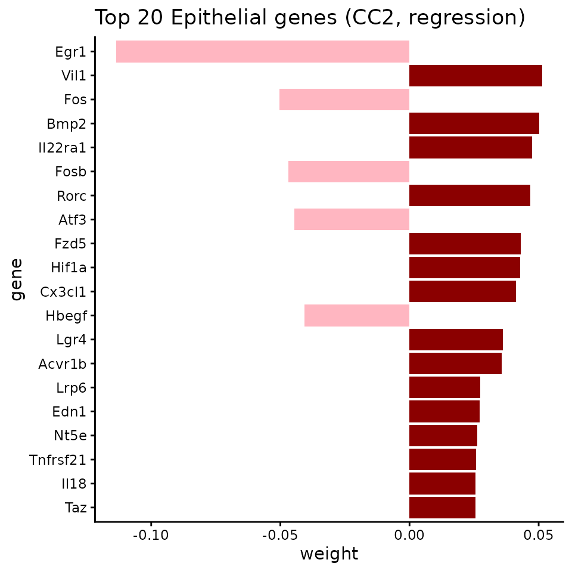
Session info
## R version 4.5.3 (2026-03-11)
## Platform: x86_64-pc-linux-gnu
## Running under: Ubuntu 24.04.4 LTS
##
## Matrix products: default
## BLAS: /usr/lib/x86_64-linux-gnu/openblas-pthread/libblas.so.3
## LAPACK: /usr/lib/x86_64-linux-gnu/openblas-pthread/libopenblasp-r0.3.26.so; LAPACK version 3.12.0
##
## locale:
## [1] LC_CTYPE=C.UTF-8 LC_NUMERIC=C LC_TIME=C.UTF-8
## [4] LC_COLLATE=C.UTF-8 LC_MONETARY=C.UTF-8 LC_MESSAGES=C.UTF-8
## [7] LC_PAPER=C.UTF-8 LC_NAME=C LC_ADDRESS=C
## [10] LC_TELEPHONE=C LC_MEASUREMENT=C.UTF-8 LC_IDENTIFICATION=C
##
## time zone: UTC
## tzcode source: system (glibc)
##
## attached base packages:
## [1] stats graphics grDevices utils datasets methods base
##
## other attached packages:
## [1] ggplot2_4.0.2 CoPro_0.6.1
##
## loaded via a namespace (and not attached):
## [1] rappdirs_0.3.4 sass_0.4.10 generics_0.1.4 lattice_0.22-9
## [5] digest_0.6.39 magrittr_2.0.5 timechange_0.4.0 evaluate_1.0.5
## [9] grid_4.5.3 RColorBrewer_1.1-3 fastmap_1.2.0 maps_3.4.3
## [13] jsonlite_2.0.0 Matrix_1.7-4 httr_1.4.8 spam_2.11-3
## [17] viridisLite_0.4.3 scales_1.4.0 isoband_0.3.0 httr2_1.2.2
## [21] textshaping_1.0.5 jquerylib_0.1.4 cli_3.6.6 rlang_1.2.0
## [25] gitcreds_0.1.2 withr_3.0.2 cachem_1.1.0 yaml_2.3.12
## [29] tools_4.5.3 parallel_4.5.3 memoise_2.0.1 dplyr_1.2.1
## [33] curl_7.0.0 vctrs_0.7.3 R6_2.6.1 lubridate_1.9.5
## [37] matrixStats_1.5.0 lifecycle_1.0.5 fs_2.0.1 MASS_7.3-65
## [41] ragg_1.5.2 irlba_2.3.7 pkgconfig_2.0.3 desc_1.4.3
## [45] pkgdown_2.2.0 pillar_1.11.1 bslib_0.10.0 gtable_0.3.6
## [49] glue_1.8.0 gh_1.5.0 Rcpp_1.1.1-1 fields_17.1
## [53] systemfonts_1.3.2 xfun_0.57 tibble_3.3.1 tidyselect_1.2.1
## [57] knitr_1.51 farver_2.1.2 htmltools_0.5.9 labeling_0.4.3
## [61] rmarkdown_2.31 piggyback_0.1.5 dotCall64_1.2 compiler_4.5.3
## [65] S7_0.2.1-1